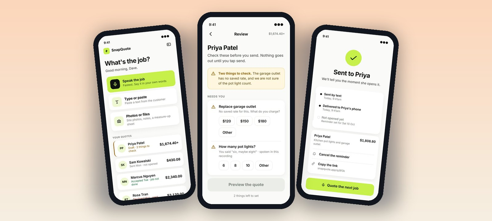
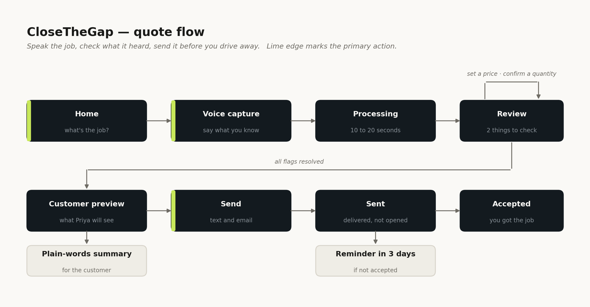
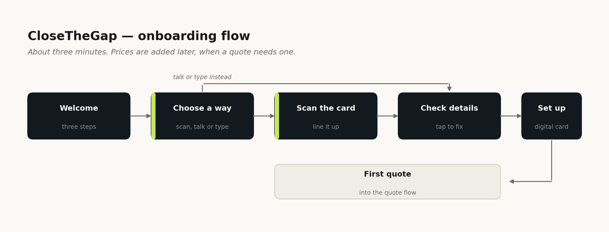
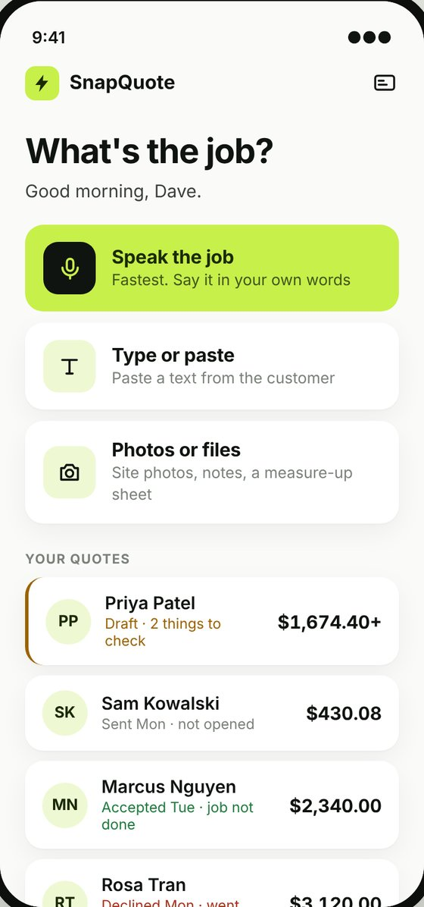
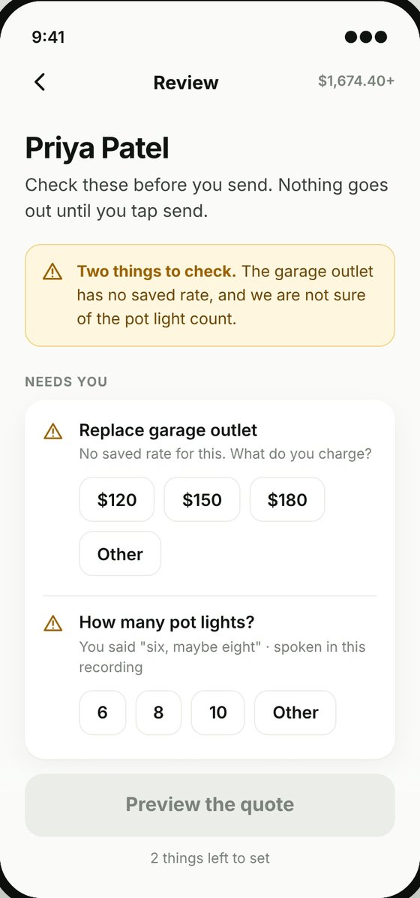
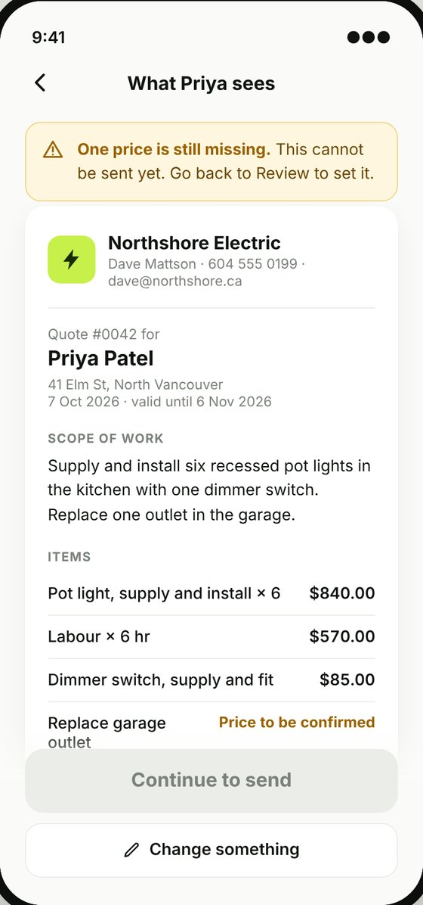
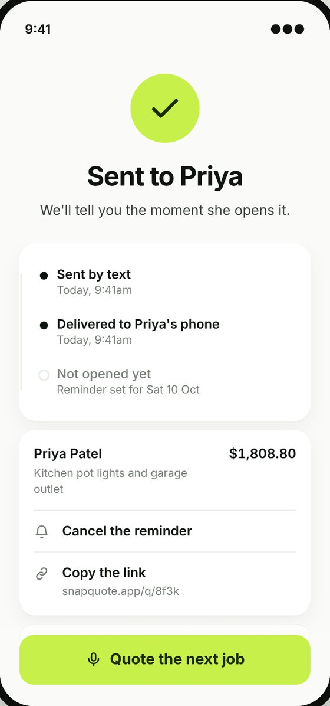

AI product · 2026
SnapQuote: Helping tradespeople send a quote before they drive away
Research shaped an AI quoting app that won the ProductBC Build-a-thon 2026.

Project scope
- Product
- AI quoting app for owner-operators in the trades
- My role
- Research and design lead; later one of three co-founders
- Team
- Five people at the Build-a-thon; three of us continued as co-founders
- Timeline
- Fall 2026, September to October
- Methods
- Owner interviews, owner survey, review mining, survey pretest, 24 wireframes, prototype
- Tools
- Google Forms, Figma, Figma AI, Claude
- Won the ProductBC Build-a-thon 2026.
The research story
Five steps, each answering one question and shaping the next. Select a step to jump to it.
- 1AssumptionsWhat did we actually know?Assumption mapping
- 2InterviewsHow do owners quote today?Owner interviews
- 3Survey and reviewsDoes the pattern hold?Survey · Pretest · Review mining
- 4Design rulesWhat must the product do?Findings to rules · Flows
- 5PrototypeWhat did we build?Wireframes · Prototype
Project overview
Electricians, plumbers, movers and contractors usually know the price of a job within minutes of seeing it. The quote still goes out days later, because writing it up means sitting at a laptop after a long day. By then, the customer may have hired someone else.
My role: research and design lead. I planned and ran the research, built the primary persona, and took the design from 24 wireframes to the prototype the team built.
1Assumptions: What did we actually know?
Which beliefs behind the idea are true, and which are guesses?
Assumption mapping with confidence ratings
The whole team, in week one
In week one, our team wrote down six assumptions behind the idea and rated our confidence in each. For most of them, the honest answer was "nothing." That list became my research plan.
Research impact
- A research plan: every study that followed was chosen to test one of the six assumptions, so we built on evidence instead of guesses.
2Interviews: How do owners quote today?
Why do owners send quotes late, does the delay cost them work, and what would they trust a tool to do?
In-depth interviews, walking through the last real quote
An electrician, a plumber, a mover and a general contractor
I asked each person to walk me through the last job they quoted, from the site visit to the customer getting a number. Real recent stories are more reliable than opinions about a future app, so the guide never asked "would you use this?"
Quotes wait for the evening laptop
The general contractor builds every quote at home in Excel. It takes one to three days, sometimes a week.
Silence is common, and owners can't see why
He estimated that 40 to 50% of his free quotes get no reply, and he had no way to tell whether a customer had even opened one: "I should probably use read receipts."
Owners want to stay in charge of the price
He writes line-by-line quotes because transparency earns his clients' trust. Reviews of AI quoting tools raised the same worry: what if it gets the number wrong?
Research impact
- One clear goal: a quote sent in under a minute, from a phone, before leaving the site.
- Tracked quotes: every quote became a web page, so the owner sees when it is sent, delivered, opened and accepted.
- The AI never writes a price: every price comes from the owner's own saved rates.
3Survey and reviews: Does the pattern hold?
Do other service businesses share these problems, and why do they leave existing tools?
Survey pretest with 25 made-up personas, owner survey, review and forum mining
Service business owners; Jobber community, Reddit, Capterra and G2
Before launch, we tested the survey on 25 deliberately varied made-up personas, including people who should be screened out, to find broken questions. Nothing a persona said counted as evidence. The real survey then reached service business owners, and review mining let us hear from people we couldn't reach directly.
Big platforms push owners away
The contractor had left a well-known platform after it asked for a full year up front; he said it "felt like a scam." Survey owners also named price, unneeded features and too little time saved.
Not everyone has this problem, which surprised me
Most owners we surveyed rated their current process 4 or 5 out of 5, and several freelancers quote within minutes of talking to a client.
Research impact
- A smaller product: no dashboard, no data migration, nothing to learn. One loop: create a quote, send it, see it opened and accepted. Invoicing, payments and scheduling were parked.
- A sharper audience: we focused on trades owner-operators who price on site and write quotes after hours, instead of every freelancer.
4Design rules: What must the product do?
The findings became five design rules that every screen had to follow.
- 1
One clear action
Each screen asks the owner to do one thing.
- 2
The AI never invents a price
Prices come only from the owner's saved rates.
- 3
Every price shows its source
Each line says where its price came from.
- 4
Uncertainty blocks sending
If the AI isn't sure, the line is flagged and Send stays locked.
- 5
Opened means opened
The owner only sees "opened" when the customer really opened it.


Research impact
- A design the team could build fast: five rules turned the research into clear choices, from 24 wireframes to one prototype.
5Prototype: What did we build?
If a customer asks for "six, maybe eight" pot lights, SnapQuote doesn't pick a number. It flags the line, and sending stays locked until the owner decides.

Start with the job
Flags block sending
What the customer sees
Proof of delivery
Outcome
- Won the Build-a-thonOur team won the ProductBC Build-a-thon 2026 and presented SnapQuote at the ProductBC Conference winners' showcase in October 2026.
- A working prototypeLive at snapquote-eta.vercel.app. Writing a quote from pasted text, flags that block sending, and the customer's quote page work today. Voice capture and sending are still simulated.
- A plan to validateA 10-case accuracy test with an 80% pass target, usability tests with at least two trades, and two measures: median time to send a quote and edits per quote.
- Next stepA founding pilot with BC tradespeople.
Reflection
What I learned
One sentence from one interview, "one to three days," shaped the whole product. I now listen for the number that shows how much a problem hurts, not just whether it exists.
I also learned to keep evidence and assumptions apart. Labelling our early personas as assumptions, and refusing to treat the pretest personas as data, kept the team honest about what we actually knew.
What I'd do differently
Our survey reached more freelancers than tradespeople, and only one respondent was in construction or repair. Next time I would recruit through trade suppliers and associations from day one, so the survey reaches the people we are designing for.